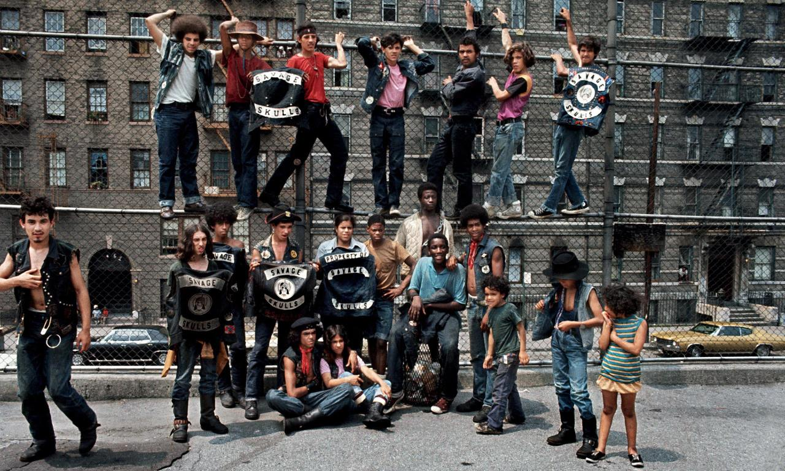
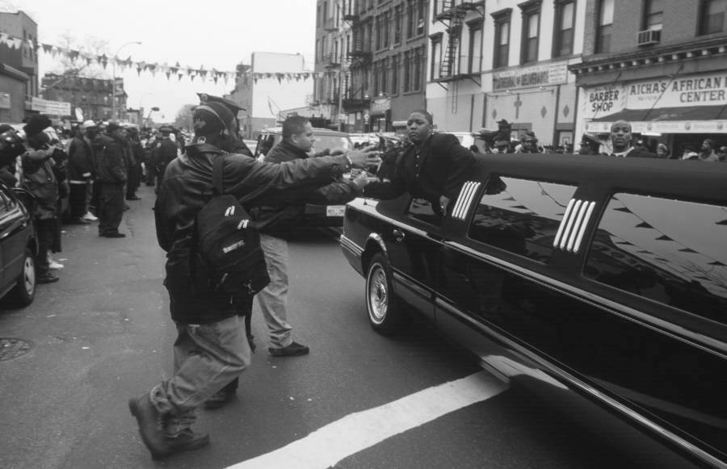
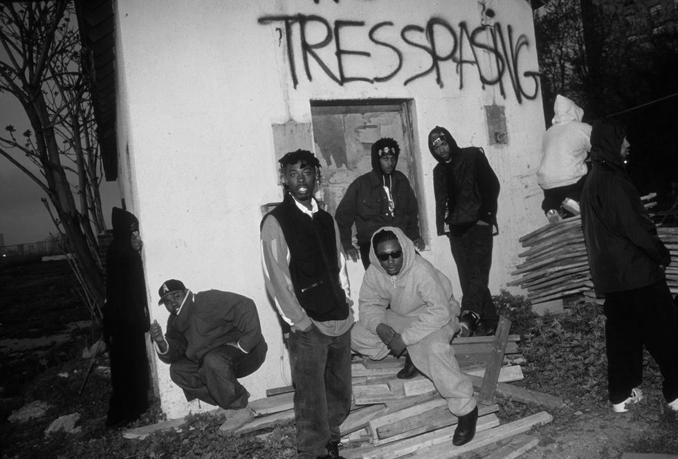

Wall Street, 1977

1980 transit strike
Wall Street, 1977
South Bronx life, 1975
1980 transit strike
Frank Horvat Photography
Cityscapes - New York (1980-86)
Tomatoes a specialty. 101st St and 1st Ave, 1970.
Allen Ginsberg in Washington Square Park, 1966
Bleecker Street, 1979

181st St and Wadsworth Ave, Washington Heights, 1971
Saxophonist on a break outside Birdland, 1960

Lawrence and Willoughby Streets, Brooklyn, 1972
East River waterfront, south of the Brooklyn Bridge, Fulton Street, early 1960s
Dude about to get mugged for his guitar

7th Ave in Park Slope, 1980s
Prospect Park boathouse, 1968

3rd Ave and 17th St, 1970s
That 18th hole is really far away. 1979.
Soldiers and Sailors Monument in Riverside Park, 1970

Not creepy at all.

Wrecked

Colony Records, 49th and Broadway, 1976

Old guy pancake in 3, 2, 1,….
Early graffiti, 1975

42nd Street, 1978
Building the Verrazano Bridge, 1963
1961 winter in Times Square

Laundry day on Avenue C, where Pitt Street merges with East Houston Street, facing North, 1978
The hats. 42nd St, 1975

Chess players, New York City, 1966. Photograph by Jack Lillywhite.

St Marks Place, 1984

Boys on Checker Floor, Far Rockaway, NY, Arthur Tress, 1973, Brooklyn Museum: Photography
Size: sheet: 14 × 11 in. (35.6 × 27.9 cm) image: 10 × 10 in. (25.4 × 25.4 cm)
Medium: Gelatin silver photographhttps://www.brooklynmuseum.org/opencollection/objects/189213

CultureHISTORY: Brooklyn, 1984 - Photo by Jamel Shabazz
Klein’s on the Square II, Union Square, New York, 1980s by Carl Burton 2011 on Flickr.

1971

1st Ave and 6th St, 1979

Car wash on 6th Ave between Broome and Spring Streets, 1984

JJ Train at Elderts Lane, Woodhaven, Queens, in the 1970s

Overalls twins, with a portable radio, rockin’ that AM signal
Looking south down Broadway from 88th Street, 1975
Jay & Fulton Streets, Brooklyn. 1972.

Hahahahahaha “Flashpants” – “cop a feeling!” Hahahaha! 1984

SAVAGE SKULLS…based in South Bronx, the gang declared war on the drug dealers that operated in the area, mid 1970s.
Marcy Avenue station in Williamsburg, 1983
Coney Island food, 1977
Robert Redford hails a cab in Times Square. Just a few blocks away, at the Biltmore Theater on 47th Street, was where the actor got his first major notices as the star of Neil Simon’s 1963 Broadway play, “Barefoot in the Park.”
In the 70s, checker cab companies tried putting a swimsuit model on top of every cab, to increase ridership.
1 Train at 72nd and Broadway, 1972
SS Franklin Avenue shuttle, 1982

Lil’ Cease: Greeting fans during Biggie’s funeral, Clinton Hill, Brooklyn, New York, March 18, 1997.

Raekwon, GZA, Ol’ Dirty Bastard, RZA & Method Man: Staten Island, New York, May 8, 1993.
Beastie Boys, sitting on a skinny ass boom box